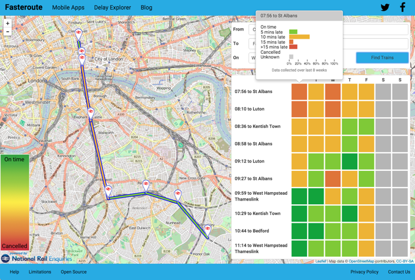

Travel smarter with open data app Fasteroute
Research from open data startup Fasteroute and the Open Data Institute (ODI) reveals the UK cities most affected by morning delays and how commuters can avoid them
 The Fasteroute Delay Explorer web app helps commuters travel smarter.
Using 11 weeks' worth of real-time open rail data (from September to November, 2015), Fasteroute and the ODI analysed the punctuality performance of morning train arrivals in 16 major cities across Britain.
Categorised into 30-minute time periods between 7-10am, the data shows:
- Services arriving into cities between 8:30-9am are the most unreliable for commuters. An average of two fifths (42.5%) of train services are delayed or cancelled during this time, causing commuters using these services to endure over 10 hours a year in delays.
- More than one third (35.7%) of all train arrivals between 8:30-9am are delayed by between 1-10 minutes, accounting for the most common delay durations.
- Considering all train delays, on average commuters could: a. recover over 3.5 hours a year if they travelled an hour earlier (arriving between 7:30-8am instead of 8:30-9am), reducing the average chance of delays by one quarter b. save early risers travelling an hour and a half earlier (arriving between 7-7:30am instead of 8:30-9am) over five hours a year, reducing their average chance of experiencing delays by half.
Although one to 10-minute delays are considered by the rail industry to be minor disruptions, avoiding such delays will allow commuters to accrue significant time savings over a year. They will also avoid knock-on impacts, such as missing transport connections, which could result in further delays.
The research reveals that delays become longer as the morning goes on, which may suggest that earlier delays affect later services. If people were to work more flexible hours, they could reduce their exposure to regular delays. This may also reduce passenger congestion and ease pressure points on the network.
Cities most affected by morning delays
On average between 7-10am, commuters have between a one in four (24%) chance (7-7:30am) and two in five chance (43%) (8:30-9am) of arriving late. This varies from city to city:
- Commuters into Birmingham, Manchester, York, Sheffield and Cardiff are most likely to be delayed on services arriving between 7-10am (two in five, 39-45%, of trains are late).
- Commuters arriving into Birmingham, Manchester, Glasgow and Cardiff between 8:30-9am, the busiest time for train services, are more likely to be on a service arriving late than they are to be on one arriving on time.
- Commuters into Exeter, Southampton and Newcastle are the least likely to arrive late with roughly one in four (23-31%) late services.
The Fasteroute data analysis categorises delays as one minute or more after the planned arrival time, which differs to how network operators classify delays: only counting those of five minutes or more, or ten for long-distance services. The data is collected in and compared to the most recent schedule, including adjustments for engineering works. This allows passengers to make better-informed travel choices to optimise their journeys on a daily basis.
How commuters can use the data
For the first time, the Fasteroute Delay Explorer allows commuters to evaluate a train service’s reliability. By analysing a service’s punctuality over time, visualisations show users the probability of arriving on time, or with delays, and how likely it is that a certain train may be cancelled, while directly comparing services at similar times. Each reliability rating is also available in the Fasteroute app’s live departures and arrivals board.
George Goldberg, Co-Founder, Fasteroute, said:
Fasteroute empowers rail passengers to improve their journeys. By choosing more reliable trains to travel on, and avoiding those with a history of delays and disruption, passengers can save time and worry less. Over time, data continually collected across the rail network will allow Fasteroute to predict how major incidents will affect rail services, and assist passengers to get to where they need with minimum hassle and inconvenience.
Jeni Tennison, Deputy CEO and Technical Director, ODI, said:
Train delays are inevitable, and our existing rail infrastructure routinely runs at capacity. While city planners develop transport services for a growing population, the Fasteroute team has demonstrated how historical analysis of real-time open data could bring about more efficient commuting and a more even demand on current train services. Bringing this open data closer to the public will inform their daily decision-making, and can in turn, reduce overall delays of services already in operation.
If passenger numbers per train were available as open data, we could analyse the overall effects of late train services. This data is not currently available. We urge operators to publish passenger numbers to increase transparency about the impact of delays and monitor whether bringing this data to passengers does influence their commuting behaviour.
The Fasteroute Delay Explorer was developed as a commissioned ODI summer showcase project, ‘Visualising Rail Disruption’.